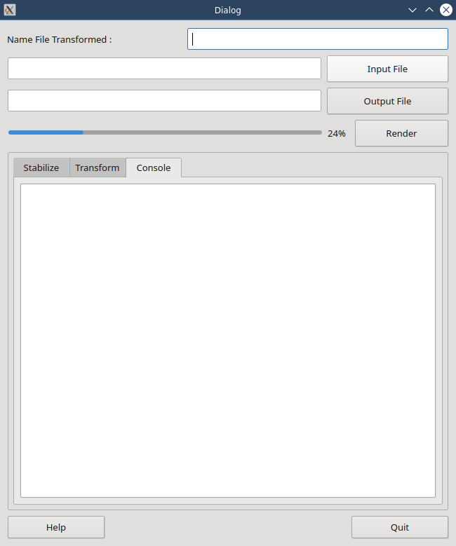

Installation¶
la est la description générale
Standalone¶
pensez à verifier la dernière maj avant d’installer. Cela serait vraiment bête de ne pas le faire
Package Manager¶
Note
Ceux-ci sont fait par des volontaires de leur propre chef, cad que ce n’est pas moi qui les aient créer. Merci à eux.
Essential Dependencies¶
blablabla Python bien sur pyQT5 et bien sur dvgrab
Installing Dependencies¶
vous les trouverez ici
Optionnals Dependencies¶
si si des fois, il y en a d’atures.
Running MX 5000¶
si cela a marché vous serez capable de lancer mx 5000 à partir du menu
TroubleShooting¶
des fois cela peut arriver
Mailing List¶
elle est ici avec des liens
Forum¶
pas sur qu’il y en ait un. si ooui encore un lien
FAQ¶
Là c’est possible mais pas sur du tout
MX 5000 Documentation¶
c’est mieux que ce que j’ai réalise pendant les vacances. Mais c’était déjà un plus. Nombreux sont ceux qui n’ont rien. Les pauvres.
User Manual¶
voici le plus interressant, non ?
Main Interface¶
Au lancement vous verez ceci

cette application est vraiment un must. Quel travail Georg.
First Things to do¶
eh oui comme tout logiciel il y a des choses à faire. Et la première est d’aller faire un tour dans les préférences, si elles existent. Et vous êtes chanceux car elles existent, du smoins pour celle-là.
Preferences¶
Nous voici dans le vif du sujet.
Tout au début¶
nous avons cet onglet
En second¶
Nous avons ceci.
Enfin¶
Pour terminer, il y aura aussi quelque chose à se mettre sous la dent.
About¶
Cette appli est faite en PyQt.
Credit¶
J’ai développé cette appli sur mon temps libre
Developper Manual¶
Là j’aurai vraiment été » motivé et utiliser beaucoup de temps pour faire cela.
Je recolle ce si beau logo,juste pour le fun.